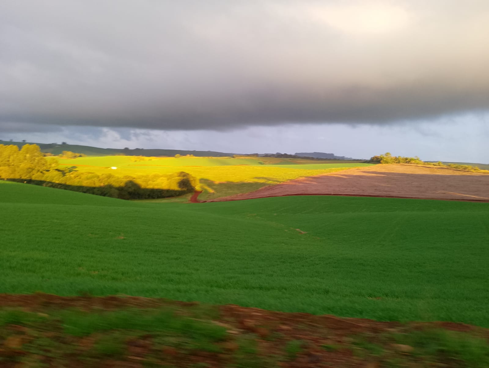
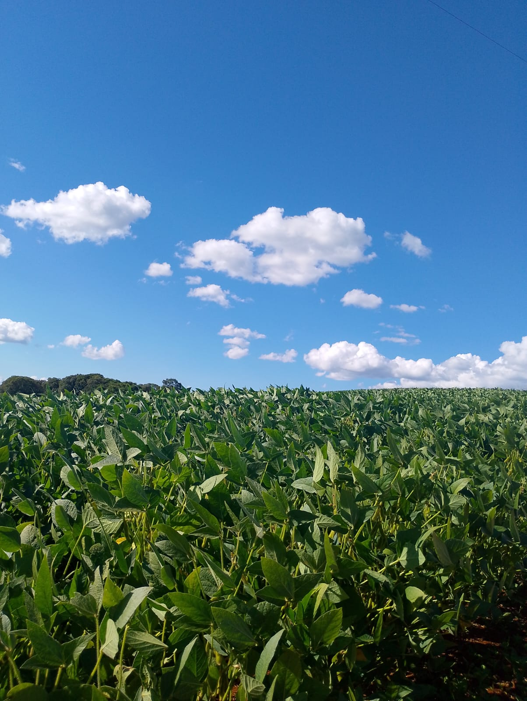
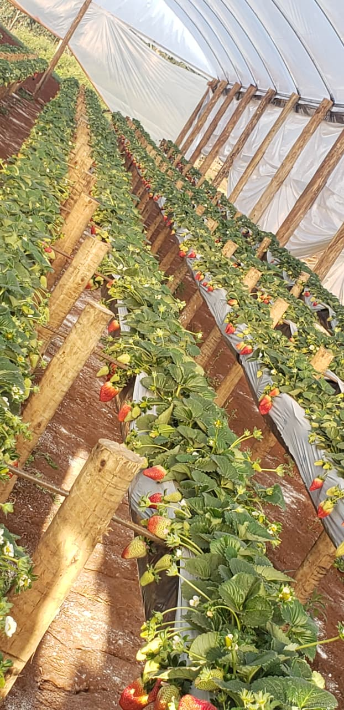
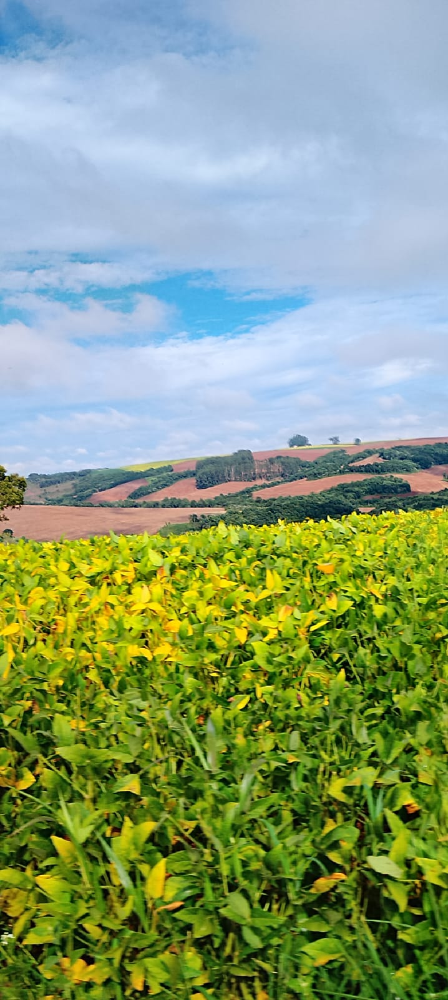
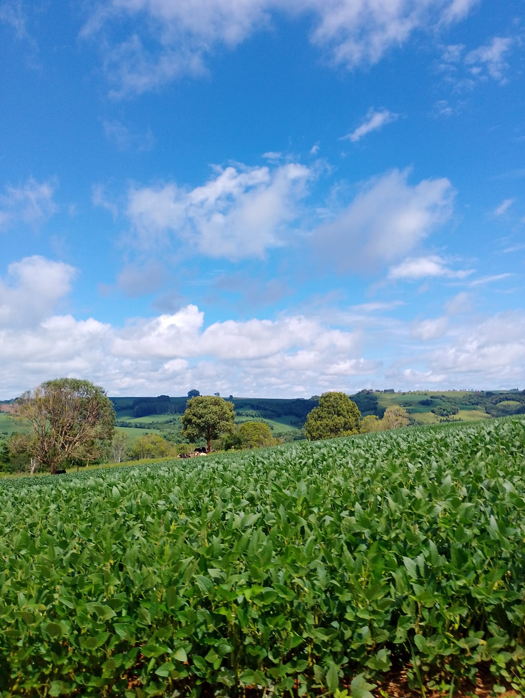
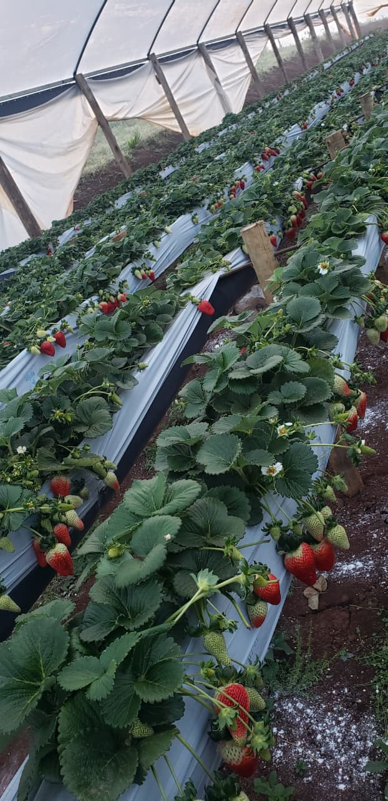
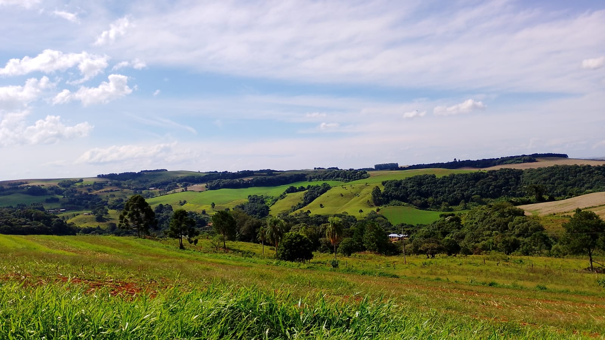
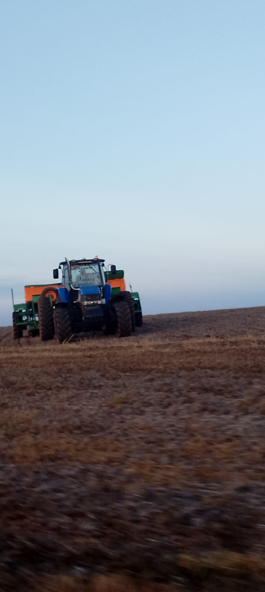

O que é o Agro de Energia Limpa?
É o conceito de Fazenda Autossuficiente, onde o produtor rural deixa de depender de fontes externas de energia e combustíveis fósseis. Ele utiliza o próprio espaço, o sol e os resíduos (o que antes era lixo) para gerar sua própria força de trabalho, fechando um ciclo 100% sustentável. Em vez de pagar contas de luz que só sobem, enfrentar quedas de energia que estragam a produção ou depender de diesel caro, ele passa a gerar sua própria força a partir do que já existe na propriedade: o sol que bate no telhado, os dejetos dos animais, os restos de colheita e até o vento que sopra entre as plantações.
Os Três Pilares Principais
Biodigestores
- Como funciona: Dejetos de animais e restos de alimentos são fermentados por bactérias em um tanque fechado.
- O que gera: Biogás (que vira eletricidade ou gás de cozinha/combustível) e Biofertilizante (adubo orgânico potente que substitui os químicos).
Energia Solar
- Como funciona: Instalação de placas fotovoltaicas em telhados de galpões ou direto no solo.
- Destaque (Agri Voltaica): Instalar painéis sobre as plantações. O painel gera sombra para proteger as plantas do calor extremo, e a umidade do plantio resfria o painel, aumentando sua eficiência.
Biomassa e Biocombustíveis
- Como funciona: Uso de matéria orgânica para gerar combustível e calor.
- Exemplos práticos: Queima do bagaço da cana-de-açúcar para gerar energia nas usinas, uso de Biodiesel (feito de óleos vegetais) nos tratores, e florestas plantadas (com eucalipto) para lenha sustentável.
Galeria








Saiba Mais Sobre
Se você se interessou por esse assunto, recomendo pesquisar mais sobre, aqui abaixo você encontra uma lista de artigos para se aprofundar mais: